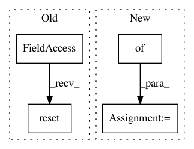

d6ee34c979aaef712809f77d9c5693ba0090633a,cistar-dev/build-tester.py,,,#,9
Before Change
exp.env.step(
[25, 25, 25, 25, 25, 25, 25, 25, 25, 25, 25, 25, 25, 25, 25, 25, 25, 25, 25, 25, 25, 25, 25, 25, 25, 25, 25, 25,
25, 25, 25, 25])
exp.env.reset()
for _ in range(10):
exp.env.step(
[15, 15, 15, 15, 15, 15, 15, 15, 15, 15, 15, 15, 15, 15, 15, 15, 15, 15, 15, 15, 15, 15, 15, 15, 15, 15, 15, 15,
15, 15, 15, 15])
After Change
cfg_params = {"start_time": 0, "end_time":3000, "cfg_path":"debug/cfg/"}
initial_config = {"shuffle":False}
scenario = LoopScenario("test-exp", type_params, net_params, cfg_params, initial_config)
////data path needs to be relative to cfg location
leah_sumo_params = {"port": 8873}
In pattern: SUPERPATTERN
Frequency: 3
Non-data size: 4
Instances
Project Name: flow-project/flow
Commit Name: d6ee34c979aaef712809f77d9c5693ba0090633a
Time: 2017-02-20
Author: kanaadp@gmail.com
File Name: cistar-dev/build-tester.py
Class Name:
Method Name:
Project Name: minerva-ml/open-solution-data-science-bowl-2018
Commit Name: 28ec5687220f562b3bd1b220ed80eded79c54824
Time: 2018-02-09
Author: kamil-kaczmarek@users.noreply.github.com
File Name: steps/pytorch/callbacks.py
Class Name: NeptuneMonitor
Method Name: on_train_begin
Project Name: minerva-ml/open-solution-data-science-bowl-2018
Commit Name: 28ec5687220f562b3bd1b220ed80eded79c54824
Time: 2018-02-09
Author: kamil-kaczmarek@users.noreply.github.com
File Name: steps/pytorch/callbacks.py
Class Name: TrainingMonitor
Method Name: on_train_begin